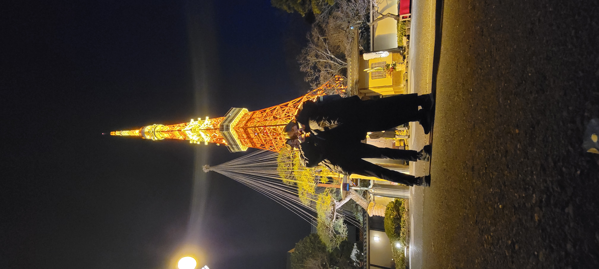
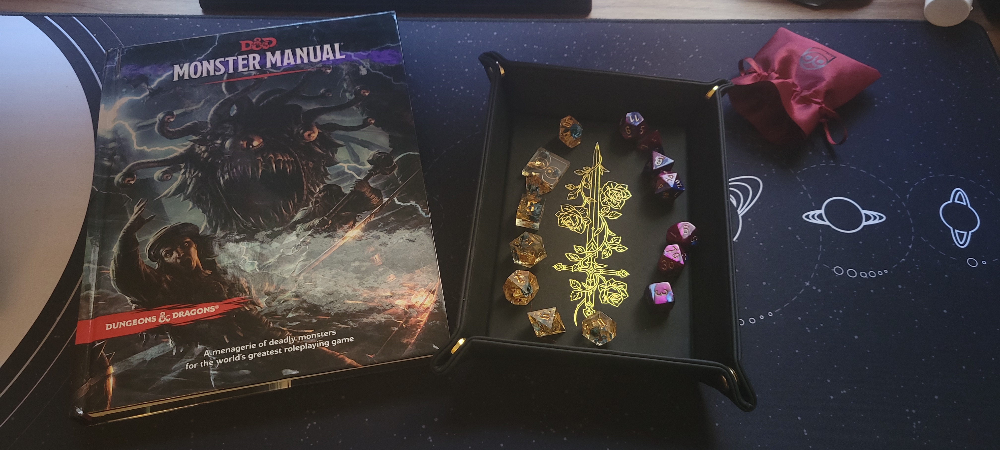

Javier's Hobbies!

I enjoyed traveling during my time away from class and work. I usually try to go on vacation once to twice a year during
school breaks and over the summer. This photo was taken in Japan in January of 2024 right before winter break ended. It was
a trip my partner and I had been planning for more than a year and we finally made it happen!
Travel

Cross Stitch

I have been playing Dungeons & Dragons on and off for 6 years now. I had a group of friends who really enjoyed playing it
and they convinced me to join them for a session. My partner played as well and encouraged me to get into it. I joined my
friends for a view sessions and was very confused and I almost didn't continue. I joined a group that my partner had started
with some of her friends from school/work. I had understood the game more and had alot more fun!
I usually play every Saturday afternoon!